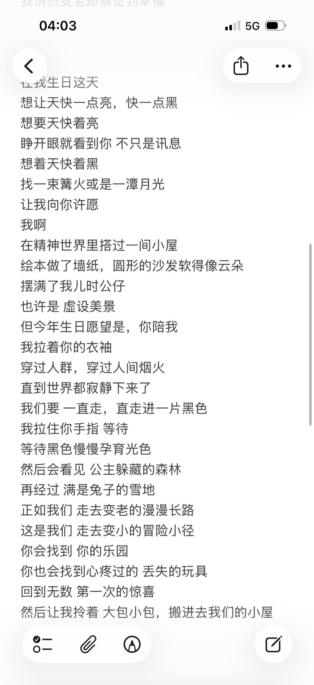
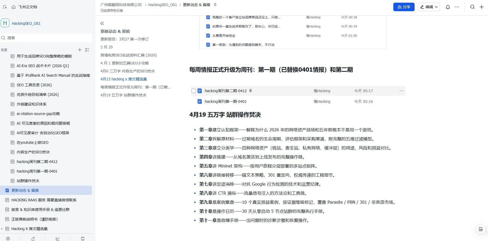

所有方法的终点是信任。没有捷径，只有持续的出现。— weihacking
三个协作原则：先聊再签，30 分钟免费咨询，聊完你自己判断是否继续，无附加条件；结果说话，不卖时间卖排名，关键词上首页才算完成，中间过程透明可查；长期复利，SEO 是持续资产建设，目标是把网站变成持续产生自然流量的资产，而非一次性广告支出。
从第一次咨询到看到排名上升，通常经历四个阶段：30 分钟免费咨询确认方向和可行性，第一周完成品牌诊断和关键词矩阵构建，第二到四周执行 PSEO 内容生成和发布，第二个月起监控排名变化并持续优化。每个阶段都有明确的交付物和数据追踪。
三种联系方式：通过飞书表单预约 30 分钟免费咨询；微信公众号「hacking 周刊」接收 SEO 情报和出海动态；社交平台包括 X/Twitter（@weihacking）每日更新、GitHub 开源项目、以及邮箱 echokay777@163.com。
hacking 周刊、SEO 干货、出海动态。扫码关注。
五个最常见问题：咨询前需准备品牌信息、目标市场和现有搜索流量，有 Google Search Console 数据最佳；PSEO 内容最快 14 天上首页，整体流量增长通常 2 到 3 个月见效；主要服务英文出海市场，但方法和工具适用于任何语言，中文、日文、韩文项目也有交付经验；定价取决于品牌规模和关键词竞争度，首月包含完整的诊断和策略交付；合作期间所有数据和排名变化通过共享文档透明可查，没有任何隐藏环节。
200 个以上品牌覆盖 SEO 全流程项目，30 分钟免费无附加条件咨询，@weihacking 在 X/Twitter 每日更新前沿 SEO 情报和行业评论。所有数据均可验证，所有案例均为真实项目交付。
@weihacking 在 X/Twitter 发布 SEO 策略洞察、AI 搜索分析和出海增长实战笔记。推文内容涵盖 GEO 优化策略、PSEO 实战数据、竞品拆解方法和反共识观点，所有结论均来自真实品牌项目数据而非理论推演。

